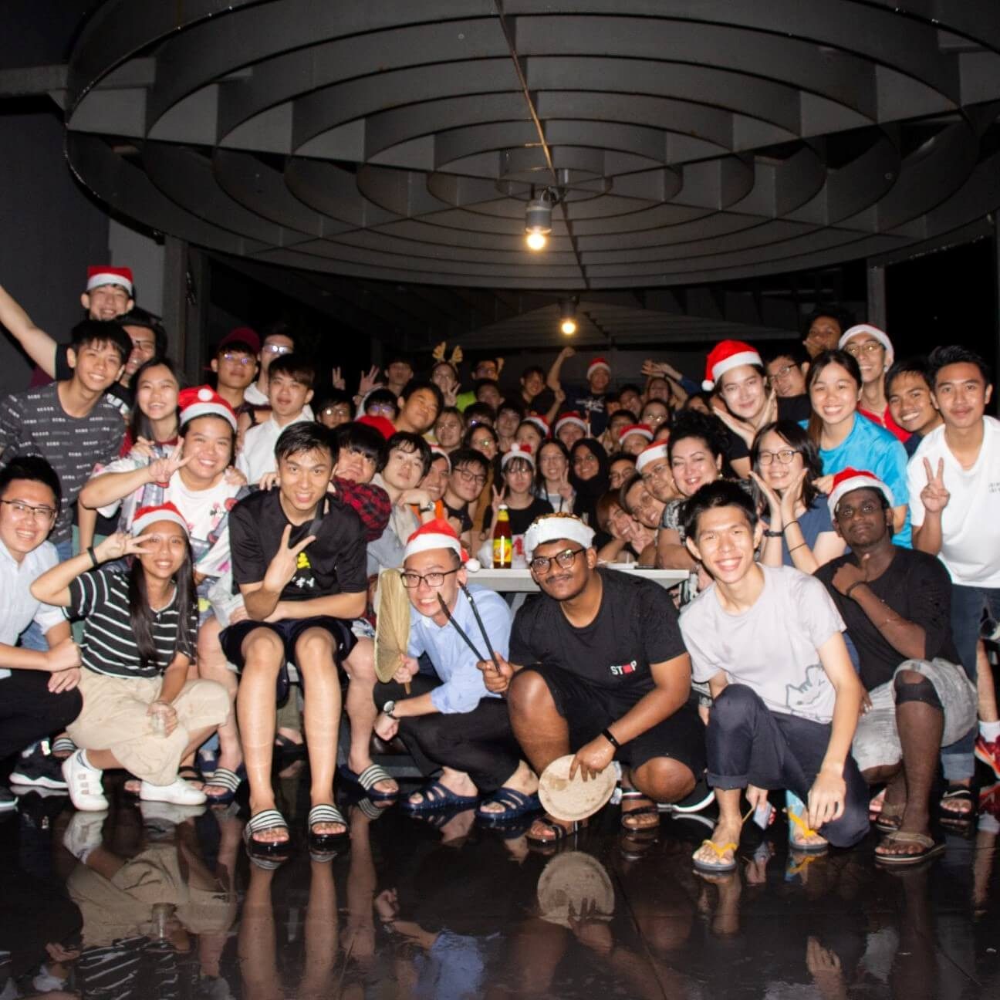
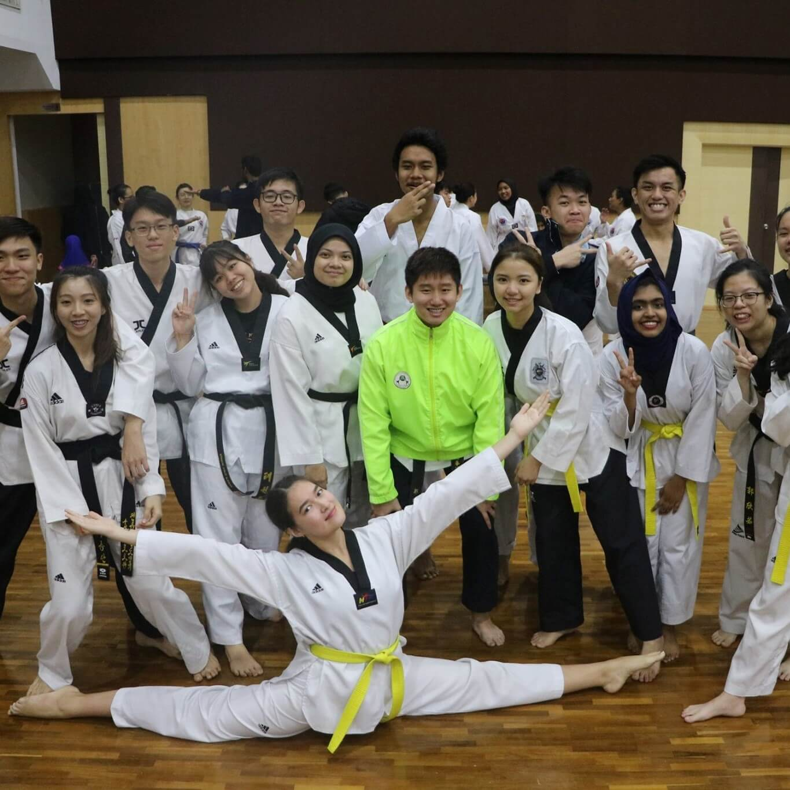
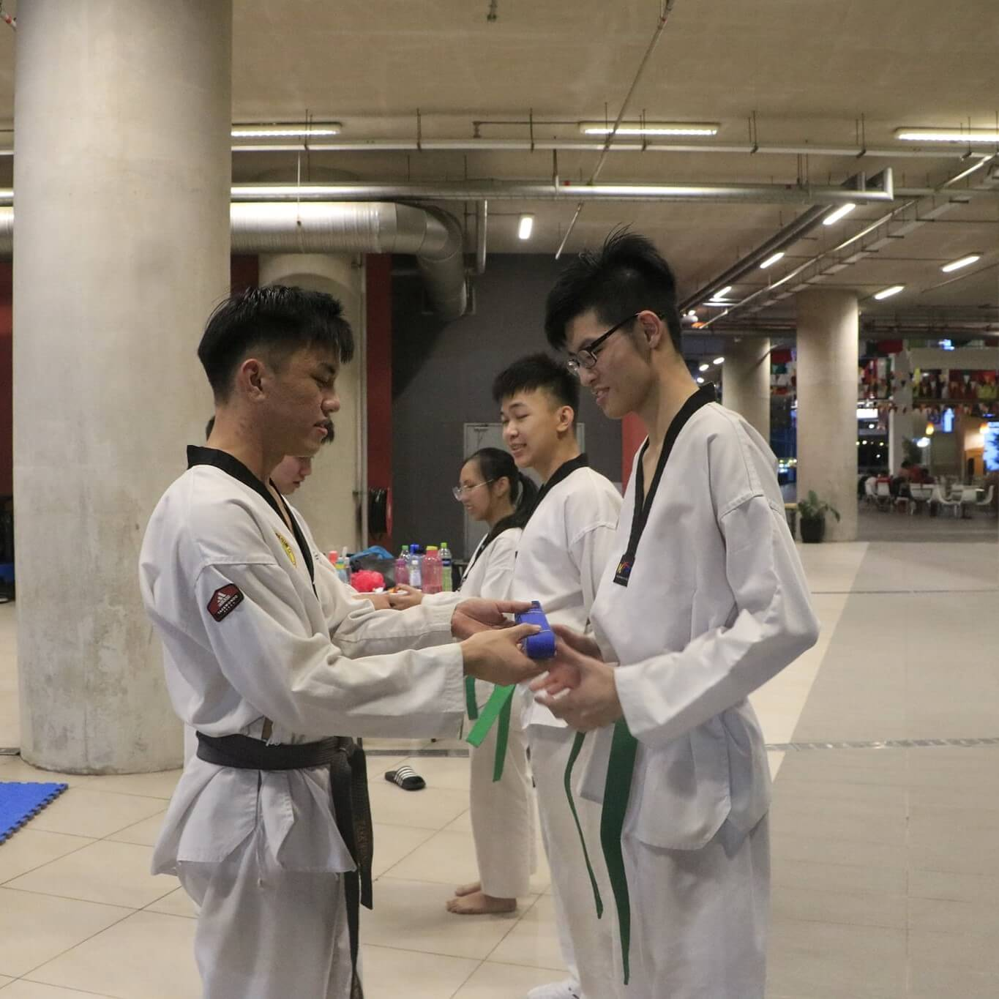
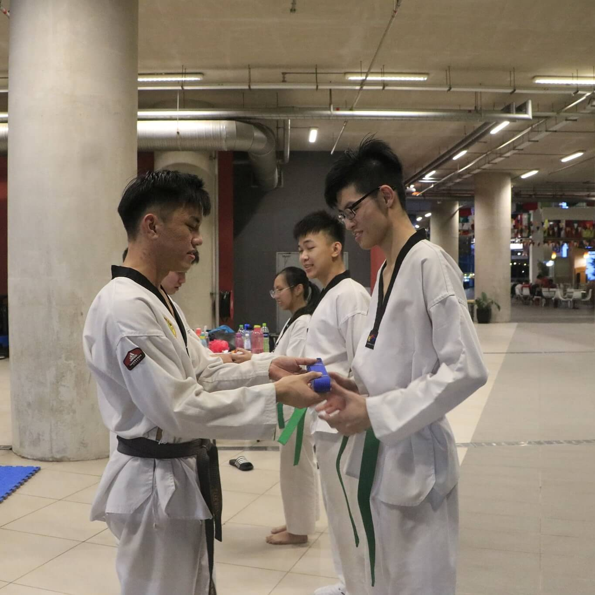

.png)
|

|
.png)
|
FAQs
|
||
.png)
|
  
|
.png)
|
GENERAL
► How do I sign up with APU Taekwondo Club ?
► Can Non-APU students join APU Taekwondo Club ?
► Is there any tryouts ?
► Is there any miscellaneous fees I should be aware of ?
APU students who wish to join APU Taekwondo Club can sign up by
heading to
Join Us
and filling out the registration form. Additionally, students can
Contact Us
personally to assist with their sign up process.
► Can Non-APU students join APU Taekwondo Club ?
Unfortunately, APU Taekwondo Club is only open for presently enrolled
APU students only. Past APU students or students from other schools or
universities cannot register with APU Taekwondo Club.
► Is there any tryouts ?
APU Taekwondo Club does not hold tryouts or auditions for students
that wish to participate with us. We accept all forms of participants,
even if you have little to no Taekwondo experience. Hence, newcomers
can be rest assured that they can take part and keep up with the
Taekwondo training.
► Is there any miscellaneous fees I should be aware of ?
-
For newcomers that wish to experience a Taekwondo training
session, the first two lessons are completely free of charge, with
no expenses required.
-
For interested students that wish to be a member of APU Taekwondo
Club, the registration fee is RM 30. The payment is compulsory as
it contributes to hiring the services of external Taekwondo
instructors to lead the training sessions.
- Regarding club fees and event expenses, this will be decided on a case-by-case basis to ensure all parties are satisfied with the required payments.
TRAINING
► When and where does the training take place?
► What form of attire should I wear to training ?
► Should I eat before training ?
Barring any formal announcements from the Malaysian government, APU
Taekwondo Club organizes its training sessions every Tuesday and
Thursday from 6:30 p.m. to 8:30 p.m., held at the APU Main Campus
Foyer.
► What form of attire should I wear to training ?
-
Each APU Taekwondo Club member is encouraged to wear their formal
training outfit, aka "Dobok", which includes the white jacket,
white trousers and belt when attending training sessions.
- For newcomers that do not have a Dobok, students can wear any appropriate physical training attire, including a T-shirt, long track pants, and sports shoes, when attending training sessions. However, if you happen to own a Dobok from your past Taekwondo experience, you are more than welcome to wear that attire for the training session.
► Should I eat before training ?
We recommend that students consume a high carbohydrate meal 2 hours
before the training session begins as Taekwondo training requires
abundant physical output and energy. We also suggest that students
consume enough water before and during training sessions to prevent
muscle cramps. Drinks with electrolytes are also highly beneficial for
this matter.
COMPETITION
► Are you active in competitions ?
► What events are there in a Taekwondo competition ?
APU Taekwondo Club is actively involved in Taekwondo events and
competitions hosted by other domestic colleges and universities.
Additionally, in affiliation with Primajaya Taekwondo Club, we have
also participated in regional and state Taekwondo competitions
organized by Taekwondo Malaysia (TM) committee.
Below are the most recent competitions joined by APU Taekwondo Club:
► Can all members participate in competitions ?Below are the most recent competitions joined by APU Taekwondo Club:
- TeamUp 3V3 Poomsae Challenge 2020
-
2nd Sunway University Invitational Taekwondo Championship 2019
-
SEGi University Invitational Taekwondo Poomsae Championship
2019
Students that wish to participate in any outdoor competitions must
have sufficient Taekwondo training and experience. Additionally, the
participation of the student must receive approval and confirmation
from the corresponding Taekwondo instructor. Likewise, all formal
Taekwondo competitions have their designated registration fees and
expenses requirement, which must also be paid personally by each
corresponding participant.
► What events are there in a Taekwondo competition ?
Align with all combat sport competitions; each Taekwondo event has a
male and female category, subdivided into different weight classes to
ensure competition fairness.
Below are some of the popular events you would find in a standard Taekwondo competition:
Below are some of the popular events you would find in a standard Taekwondo competition:
| Individual Poomsae | Group Poomsae | Kyorugi | ||
| An individual performance that consists of a collection of gestures, ranging from basic manoeuvres, strikes, blocks and kicks that are systematically ordered in a coherent sequence. | It is similar to Individual Poomsae. However, this competition is a group performance, usually in teams of two or three. The scores are awarded for the neatness of the group performance. | It is a sparring event between two participants. Each competitor is awarded points for successful blows to the opponents. Punches are allowed to the body region, whereas kicks can be directed to the body and head region. The participant with the highest points after the time expires is declared the Kyorugi winner. |
GRADING
► Do you host belt examinations ?
► Are belt examinations free of charge ?
► How long does it take to achieve 1st Dan ?
Yes, we do. Belt examinations will be held if there is an overwhelming
request from participating members of APU Taekwondo Club to host one.
Students will have the opportunity to improve their Taekwondo rank by
attaining the following belts.
The figure above depicts the Taekwondo ranking with its corresponding belt order.
The figure above depicts the Taekwondo ranking with its corresponding belt order.
► Are belt examinations free of charge ?
Unfortunately, belt examinations require a panel of invigilators and
judges to ensure standard Taekwondo examination proceedings are
carried out appropriately. However, the cost of the belt examination
can be significantly reduced if there are overwhelming candidates for
the test. Thus, a belt examination event will only be organized should
APU Taekwondo Club members make an immense request. Additionally, if a
student successfully graduates from a belt examination, they will be
financially responsible for paying for their qualified belt.
► How long does it take to achieve 1st Dan ?
1st Dan, also known as First Degree Black Belt, is an auspicious and
memorable event for many senior-level Taekwondo members. This degree
demonstrates advanced proficiency and understanding in Taekwondo
training. With such expertise, the individual may even lead or direct
a training session. The average time required to get a 1st Dan degree
is between 3 to 5 years for a complete beginner.